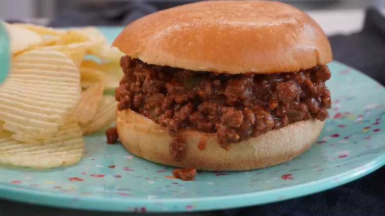

What's a Sloppy Joe?

A Sloppy Joe is a sandwich consisting of ground beef and onions in a tomato-based sauce served on a hamburger bun. The sandwich likely originated in Sioux City, Iowa in the 1930s.
According to legend, the "loose meat sandwich" was the creation of a cook named Joe.
ingredients
- 1 pound lean ground beef
- 1/4 cup chopped onion
- 1/4 cup chopped green bell pepper
- 3/4 cup ketchup,or to taste
- 1 tablespoon brown sugar, or to taste
- 1 teaspoon yellow mustard, or to taste
- 1/2 teaspoon garlic powder
- sal and ground black pepper to taste
- 6 hamburguer buns, split
Step-by-step
- Step 1
Heat a large skillet over medium heat. Cook and stir lean ground beef in the hot skillet until some of the fat starts to render, 3 to 4 minutes.
Add onion and bell pepper; continue to cook until vegetables have softened and beef is cooked through, 3 to 5 more minutes. - Step 2
Stir in ketchup, brown sugar, mustard, and garlic powder; season with salt and pepper. Reduce heat to low and simmer for 20 to 30 minutes.
- Step 3
Divide meat mixture evenly among hamburger buns.

How to make Sloppy Joes
You'll find the full, step-by-step recipe below — but here's a brief overview of what you can expect when you make these classic Sloppy Joes:
- Cook the beef, onion, and green pepper.
- Drain the liquids, then stir in the remaining ingredients.
- Simmer for about 30 minutes. Serve on hamburger buns.